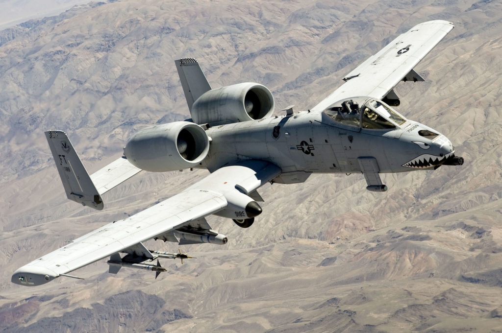
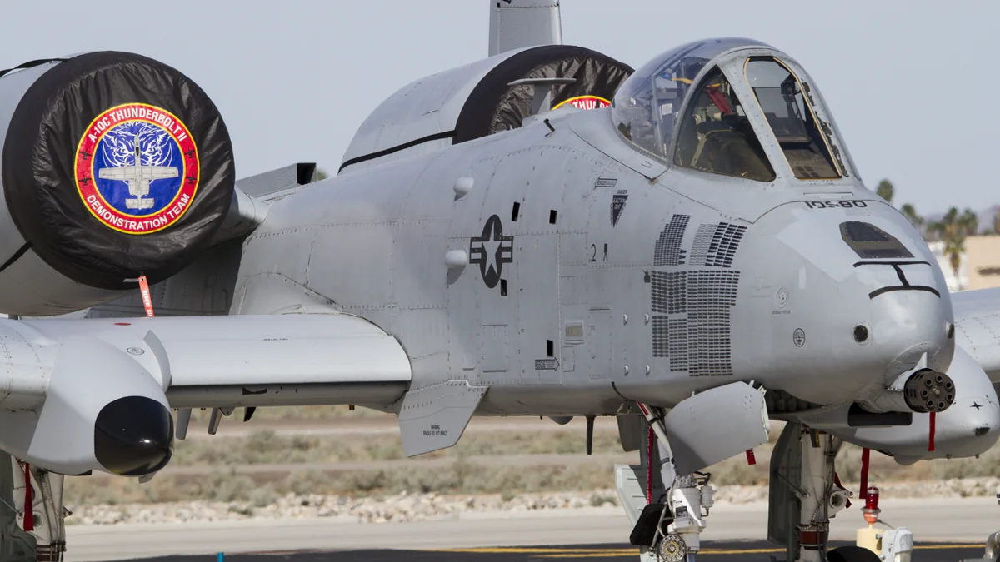
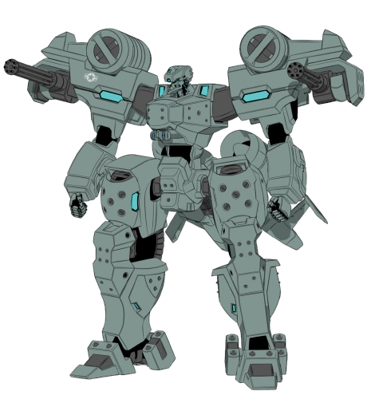

| A-10 / OA-10 Thunderbolt II | |
| Descrição | |
|---|---|
| Função: | Aeronave de Ataque de Apoio Aéreo |
| Local de Origem: | Estados Unidos |
| Fabricante: | Fairchild Republic |
| Primeiro Voo: | 10 de Maio de 1972 |
| Introduzido em: | Outubro de 1977 |
| Status: | Em Serviço |
| Utilziadores: | Estados Unidos |
| Produzido: | 1972 a 1984 |
| Caractersiticas Gerais | |
| Tripulação: | 1 |
| Comprimento: | 16.26m |
| Altura: | 4.47m |
| Envergadura das Asas: | 17.53 |
| Area das Asas: | 47.0m² |
| Peso Vazio: | 11.321kg |
| Peso Bruto: | 13.782kg |
| Peso Máximo de Decolagem: | 20.865kg |
| Capacidade de Combustivel: | 4.990kg internamente |
| Performace | |
| Motores: | 2 x General Eletric TF34-GE-100A turbofans |
| Empuxo: |
|
| Velocidade Máxima: | 381km |
| Alcance: | Não disponivel |
| Alcance de Combate: | 463km |
| Armamento | |
| Armas: | 1 x Canhão Rotativo de 30mm GAU-8/A Avenger com 1.174 Disparos |
| Hardpoints | 11 sendo 8 x Abaixo da Asa e 3 sob a fuselagem, com capacdae de até 7.260kg |
| Foguetes |
|
| Misseis |
Ar-Ar:
Ar-Terra:
|
| Bombas |
|
Fairchild Republic A-10 Thunderbolt II um caça de ataque e apoio aereo, desevolvido pela Fairchild Republic para a Força Aerea dos Estados Unidos, sendo um caça de acento unico, com dois motores turbofan, de asa reta, sendo um aeronave de ataque subsonica. Desevolvido para prove suporte aereo para as tropas aliados em solo, atacando veiculos blindaos, tanques, posições defensivas inimigas. 
O A-10 desevolvido para possuir uma alta durabilidade, com 540kg de blindagem de titanium protegendo o cokpit e sistemas do avião, permitindo que mesmo que ele sofra danos graves, ele possa continuar voando. Além disso ele pode decolar de pistas pequenas, com isso permitindo decolagem de aeroportos com pistas pequenas, com isso permitindo que decolagem perto da linha de frente. 
O A-10 é conhecido por ser um caç extremamente resistente, sendo que dizem que caso ele venha a perder uma de suas asas ele ainda conseguira voar, sendo o mesmo caso com seus motores, com ele tendo uma alta durabilidae, e podendo voar com somente um. O A-10 já apareceu em diversos filmes e jogos, por exemplo em "Transformers", "Ace Combat", "Schwarzesmarken" um spin-off da universo de "Muv Luv". 
A sua aparencia em "Schwarzesmarken"